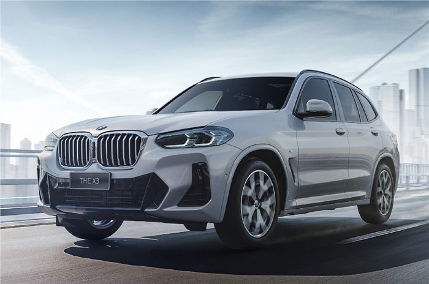
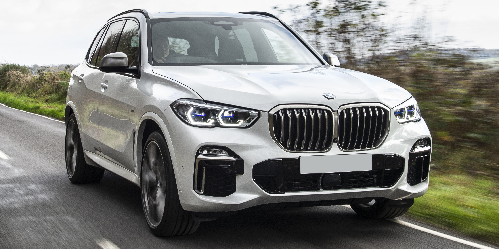
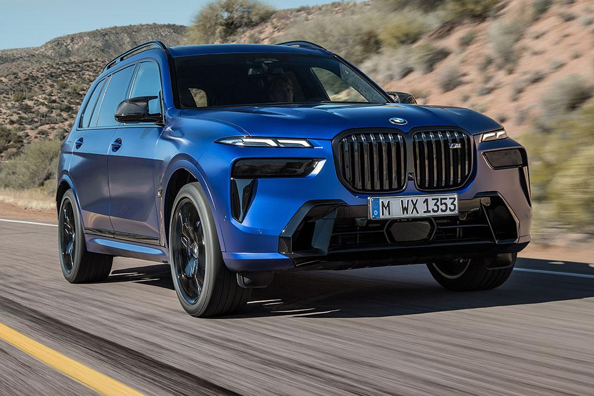
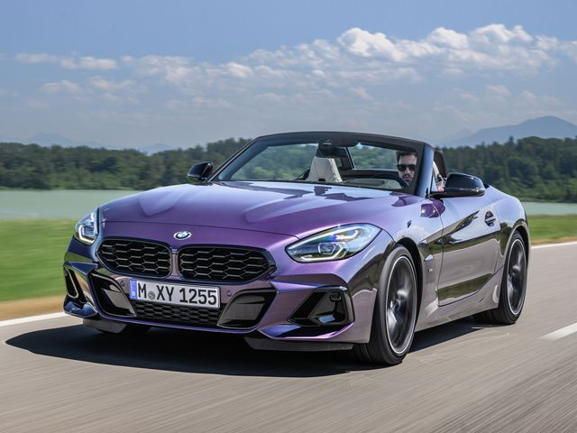
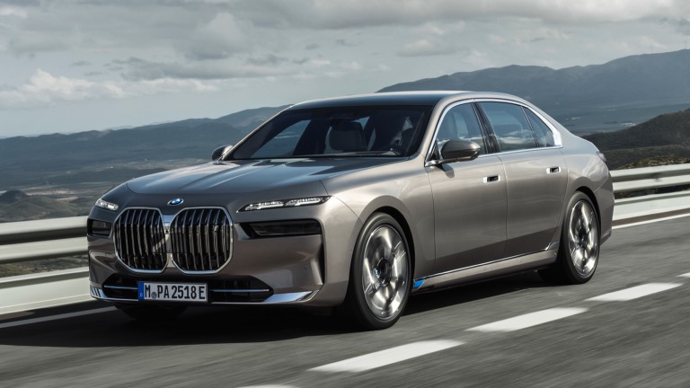

The BMW X1 is a compact luxury crossover SUV produced by the German automaker BMW. It was first introduced in 2009 and has since become a popular choice for those who want a vehicle that offers both style and performance. The X1 features a sleek design that is both modern and sporty, with a sloping roofline and aggressive front grille. The interior of the X1 is just as impressive, with high-quality materials and advanced technology that makes driving both comfortable and convenient. Under the hood, the X1 is powered by a range of engines, including a turbocharged four-cylinder engine and a six-cylinder engine that delivers plenty of power and agility. The X1 is also equipped with BMW's xDrive all-wheel-drive system, which provides excellent handling and traction in all weather conditions. With its impressive combination of luxury, performance, and versatility, the BMW X1 is a top choice for those who want a vehicle that can handle anything life throws their way.
BMW X3

The BMW X3 is a premium compact luxury crossover SUV that has been in production since 2003. It is the German automaker's entry-level SUV and competes with other popular compact luxury SUVs like the Audi Q5 and Mercedes-Benz GLC-Class. The X3 boasts excellent performance, refined handling, and a comfortable ride, making it a popular choice among drivers who value both practicality and luxury. The latest iteration of the X3, introduced in 2018, comes with a choice of two engines: a 2.0-liter four-cylinder engine that produces 248 horsepower and a 3.0-liter inline-six engine that produces 382 horsepower. The X3 is also available in both rear-wheel drive and all-wheel drive configurations. Inside, the X3's cabin is spacious and well-appointed, with high-quality materials and advanced technology features like BMW's iDrive infotainment system. Safety features on the BMW X3 include a suite of driver assistance technologies, such as lane departure warning, forward collision warning, and automatic emergency braking. Overall, the BMW X3 is a versatile and luxurious crossover SUV that offers a compelling combination of performance, comfort, and safety.
BMW X5

The BMW X5 is a luxury midsize SUV that is widely renowned for its impressive performance, advanced technology, and refined styling. With a sleek, modern exterior and a spacious, luxurious interior, the X5 is an excellent choice for drivers who value both style and substance. Under the hood, the X5 is available with a range of powerful engine options, including a turbocharged six-cylinder engine, a plug-in hybrid system, and a muscular V8 engine that delivers exhilarating acceleration and top-notch handling. In addition to its impressive performance, the X5 is packed with advanced technology, including a high-resolution touchscreen display, a premium sound system, and a suite of advanced driver assistance features. Whether you're driving in the city or hitting the open road, the BMW X5 is a top-of-the-line SUV that offers exceptional performance, style, and comfort.
BMW X7

The BMW X7 is a full-size luxury SUV that represents the pinnacle of BMW's SUV lineup. With a bold, imposing exterior and a spacious, opulent interior, the X7 is the ultimate expression of luxury and power. This seven-seater SUV is available with a range of powerful engine options, including a turbocharged six-cylinder engine, a V8 engine, and a plug-in hybrid system that combines an electric motor with a six-cylinder engine for improved efficiency and power. The X7 also boasts a host of advanced technology features, including a high-resolution touchscreen display, a premium sound system, and a suite of advanced driver assistance features that help keep you safe and in control on the road. Whether you're transporting a large family or simply want to indulge in the ultimate in luxury and performance, the BMW X7 is an exceptional SUV that is sure to impress even the most discerning drivers.
BMW Z4

The BMW Z4 is a sleek and stylish two-seat roadster that is designed for drivers who value performance and style. With its low-slung, aerodynamic body and retractable hardtop roof, the Z4 is a true driver's car that delivers an exhilarating driving experience. Under the hood, the Z4 is available with a range of powerful engine options, including a turbocharged four-cylinder engine and a muscular six-cylinder engine that delivers impressive acceleration and top-notch handling. The Z4's sophisticated suspension system and precise steering ensure that every twist and turn of the road is met with confidence and control. Inside, the Z4's cockpit is designed for maximum driver engagement, with a sporty instrument cluster, intuitive controls, and premium materials throughout. Whether you're cruising down the coast or carving up winding mountain roads, the BMW Z4 is an exceptional sports car that offers a thrilling driving experience and a true sense of style.
BMW iX
The BMW iX is a fully electric SUV that represents a new era of mobility for the German luxury carmaker. It has a futuristic design that combines elegance with aerodynamics, featuring a closed kidney grille, slim LED headlights, and a sloping roofline. The iX has a range of up to 300 miles on a single charge and can accelerate from 0 to 60 miles per hour in just 4.6 seconds. This impressive performance is due to the vehicle's two electric motors that provide a total output of up to 516 horsepower. The interior of the iX is also a marvel of modern design and technology. It features a massive curved display that spans the entire dashboard, integrating the instrument cluster, infotainment system, and other vehicle controls. The cabin is also spacious and comfortable, with high-quality materials and sustainable accents like recycled plastics and natural fibers. The iX is built on BMW's fifth-generation eDrive platform, which is more efficient and flexible than previous generations. The vehicle's 100 kWh battery pack can be charged from 10% to 80% in just 40 minutes using a DC fast charger, making it more convenient for long journeys. The iX also has advanced driver-assistance technologies like adaptive cruise control, lane departure warning, and automatic emergency braking.
BMW i7

The BMW i7 is an all-electric luxury sedan that represents the pinnacle of BMW's technology and engineering expertise. It features a futuristic design, with sleek lines and bold angles that make it stand out from other cars on the road. The i7 is powered by a state-of-the-art electric drivetrain, with a massive battery pack that gives it an impressive range of up to 400 miles on a single charge. The car's electric motors deliver instant torque and smooth acceleration, making it a joy to drive on any road. Inside the i7, you'll find a spacious and luxurious cabin, with premium materials and advanced technology at every turn. The car's infotainment system is among the best on the market, with a large touchscreen display, intuitive controls, and seamless connectivity to your favorite apps and devices. The i7 also comes with a host of advanced safety features, including lane departure warning, adaptive cruise control, and automatic emergency braking.
.jpg)